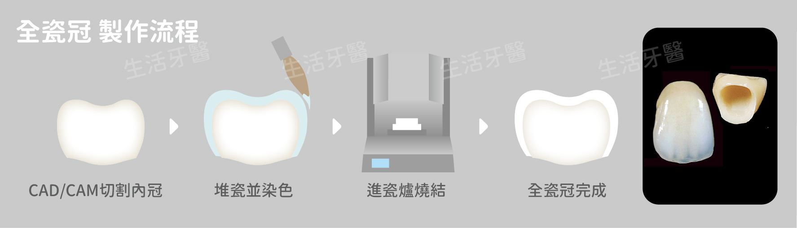
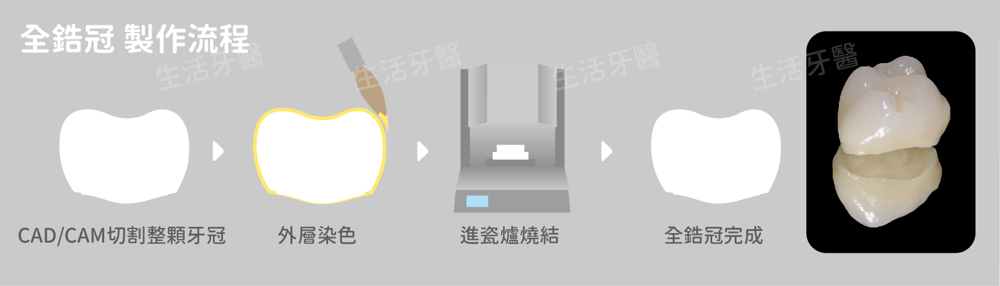
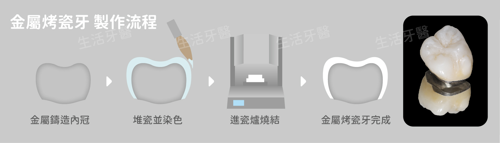
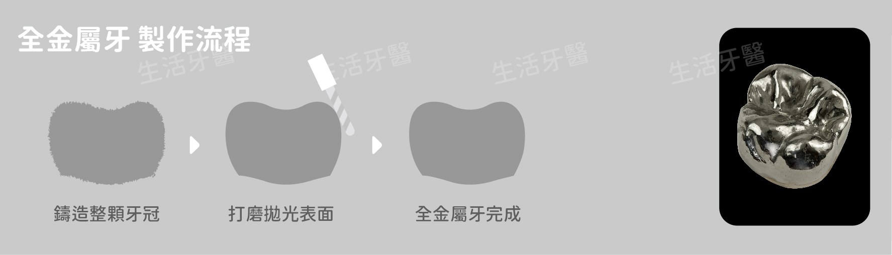
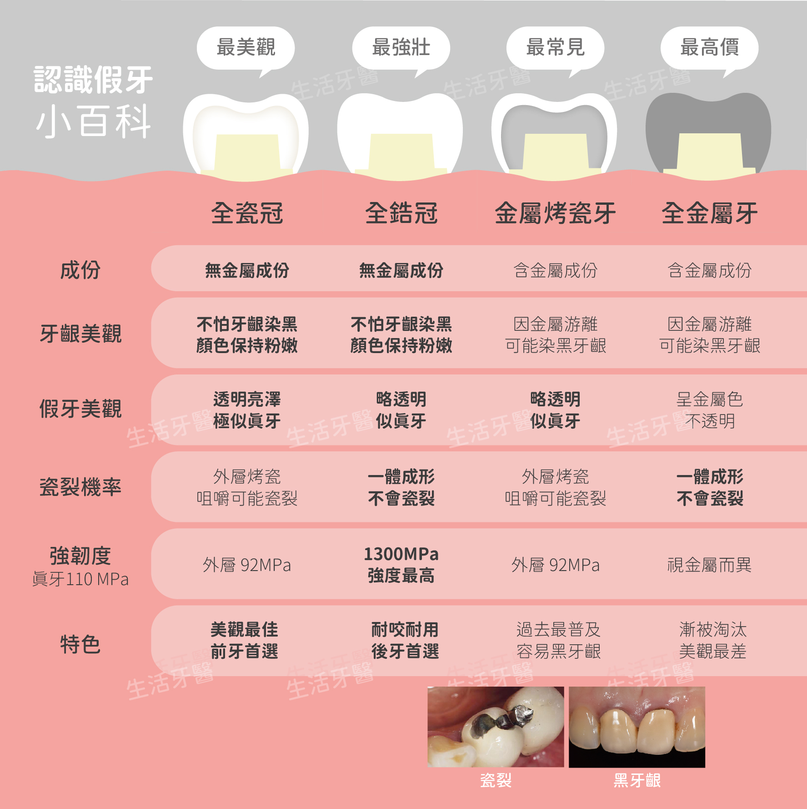

在完成根管治療，也就是抽神經以後，如果不裝戴假牙冠恐會導致牙齒斷裂之類的嚴重後果，但是假牙套材質五花八門，常讓人不知如何選擇，廣受台中及南投民眾推薦的生活牙醫診所現在就來細細比較假牙套材質、假牙冠製作流程、以及假牙價錢費用及收費方式，讓你秒懂箇中差異。

全瓷冠

主體是由不含金屬的二氧化鋯或二矽酸鋰瓷塊以電腦CAD/CAM切割成型，接著在外頭堆疊瓷粉並染色後送進瓷爐燒結，堆疊的瓷粉燒結後將變成晶瑩透亮的烤瓷層，全瓷冠的特色為不含金屬成份，所以不怕未來牙齦因金屬游離而發黑，牙齦常保粉嫩健康，且假牙外觀透亮倣真，實屬美觀最佳首選，缺點為價錢較高，全瓷冠假牙套坊間牙醫收費多座落於兩萬到三萬五千元不等，最適用於前牙區。
全瓷冠優點：
可以達到最高等級的擬真程度，美觀最佳
烤瓷層使外觀看起來晶瑩透亮，彷若真牙
不含金屬成份，牙齦保持粉嫩健康
全瓷冠缺點：
比起其他材質，全瓷冠假牙價格收費較高
咀嚼可能導致假牙外層烤瓷層瓷裂
全鋯冠

主體是由不含金屬的二氧化鋯瓷塊以CAD/CAM一體切割，再依照患者齒色進行表面染色，最後送進瓷爐燒結，由於少了外層烤瓷層，雖顏色倣真但較缺乏全瓷冠的剔透感，但也因此杜絕了以往假牙冠常有的瓷裂問題，是硬度最強、最耐咬的假牙材質，強度甚至比真牙高11倍，價格通常為一萬八千到兩萬五千元間，建議用在需要經常咬合的後牙咀嚼區，對美觀無強烈需求者亦可運用在前牙美觀區。
全鋯冠優點：
電腦一體成形切割製成，結構強壯
外層無烤瓷，不怕外層因咀嚼而發生瓷裂現象
二氧化鋯強度高、硬度高，耐磨耐咬
不含金屬成份，牙齦保持粉嫩健康
全鋯冠缺點：
比起全瓷冠略缺乏透亮感
金屬烤瓷牙

內層是成份不一的金屬鑄造而成內冠，外層堆疊瓷粉並染色後送進瓷爐燒結，堆疊的瓷粉燒結後將變成晶瑩透亮的烤瓷層，但經長久使用後容易因內冠的金屬游離導致牙齦變黑，是過去最常見的假牙冠材質，因牙齦染黑恐造成美觀障礙，所以建議僅用於不易露出的後牙咀嚼區或多顆假牙牙橋，假牙價錢收費依照貴金屬、半貴金屬及賤金屬不同等級材質而異，正規牙醫診所收費約在八千至兩萬不等。
金屬烤瓷牙優點：
若採用半貴金屬或以下等級之材質，費用較為低廉
金屬烤瓷牙缺點：
容易因金屬游離而使牙齦變黑，尤其是低等級金屬越容易發生
假牙冠外貌霧白，美觀度欠佳
咀嚼可能導致假牙外層烤瓷層瓷裂
有些人可能會因金屬材質導致過敏
全金屬牙

整體由成份不一的金屬鑄造而成，外觀呈現金屬原色樣貌，且會因為金屬游離導致牙齦染色，是美觀度最差的假牙，優點是若採用高延展性的高貴金屬，假牙冠將會隨著多次咬合而變得服貼，讓假牙冠和真牙緊密契合、提昇耐用度，但近年金價不停攀升，全金屬材質的材質假牙費用也水漲船高，假牙套費用甚至可高達四萬，目前已逐漸被淘汰。
全金屬牙優點：
高貴金屬等級之全金屬假牙冠會越咬越服貼，密合度佳
全金屬牙缺點：
外觀呈金屬樣貌，美觀度最差
金價攀升、造價高昂，導致假牙收費高
有些人可能會因金屬材質導致過敏
